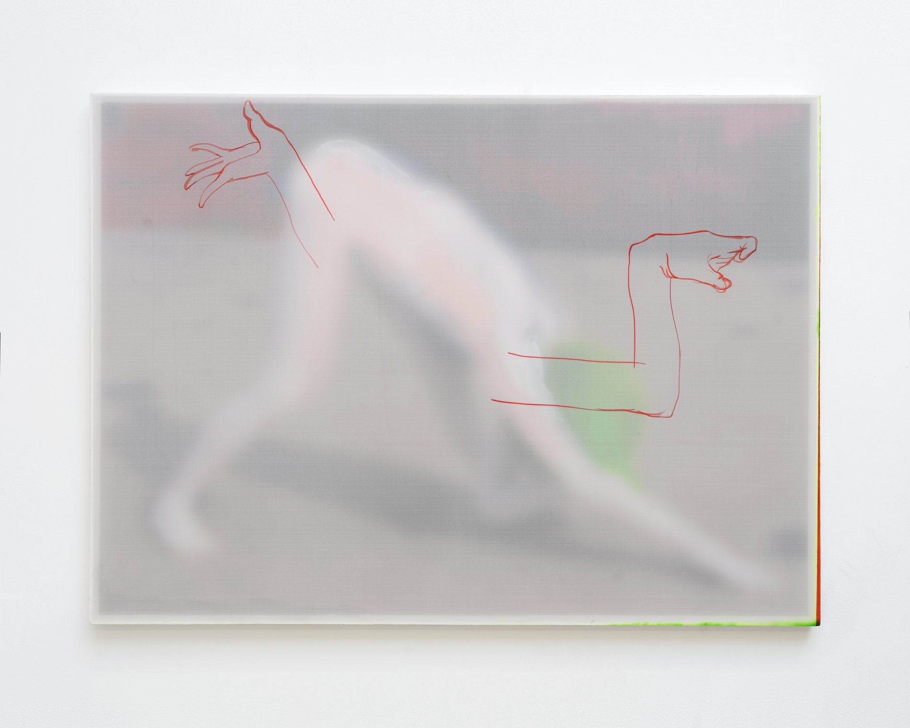
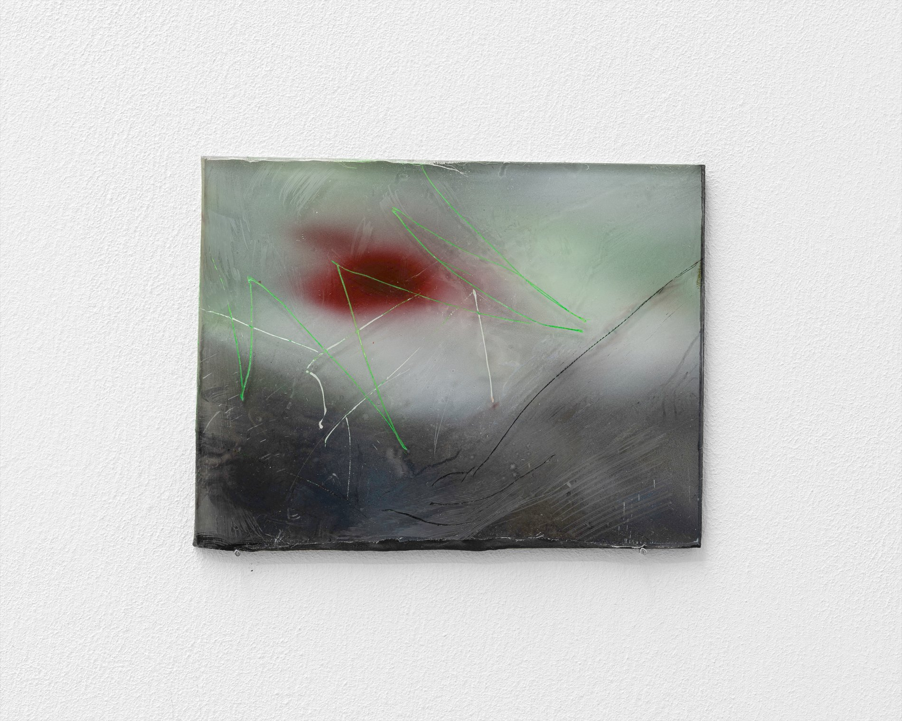
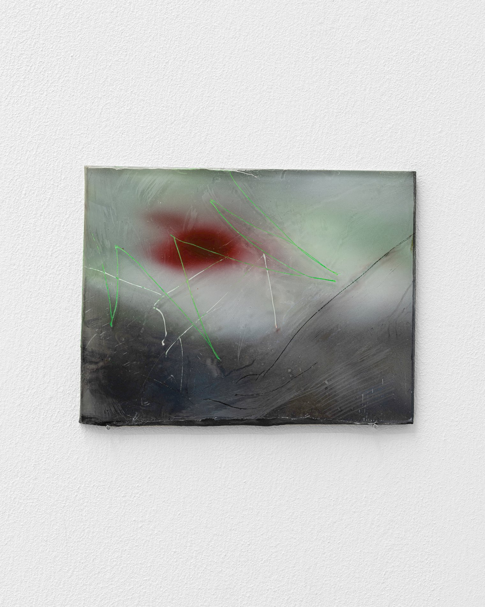

Skip to content
TONG YIN
Menu
Works
Exhibitions
News
About
Contact
2026
Calling A Deer A Horse
Installation view

Calling A Deer A Horse
2026 — Acrylic on Chinese silk, acrylic on cardboard
140 × 102 cm

Detail

Detail
← All works
Ignore →